FullDive
Interns: Ji-hern Baek / Nickki Nguyen
This past summer, I had the opportunity of working at a virtual reality startup called FullDive, a company dedicated to making the VR experience accessible. My internship went for about 3 months during which I worked on user research and extensive UX design. My projects specifically included conducting usability tests on the existing mobile application, designing the mobile login/sign up screen, redesigning the mobile home screen, and conceptualizing a 360 photo social media platform.
User Testing
Upon entering the company, one of the first projects I was tasked with was user testing on the existing Android mobile application. I was provided a company phone and a Google cardboard viewer (as the FullDive headset was going through its final rounds of designs). The original application looked like the following:
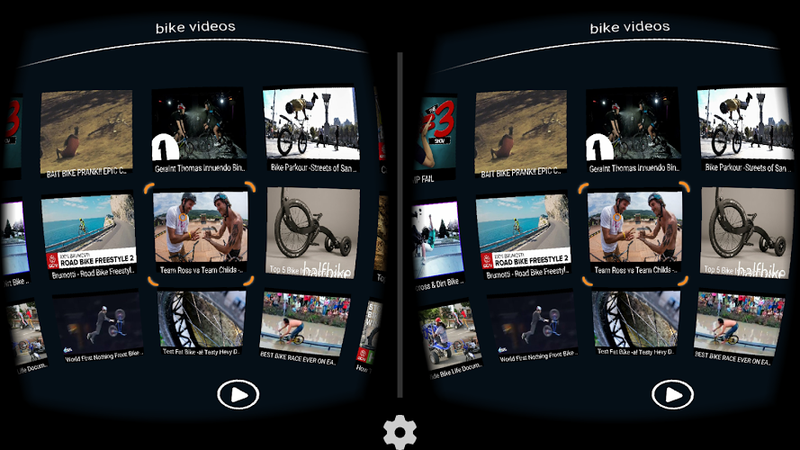
My initial thought when looking at the application was that it didn't look out of place. It conveyed a theatre-like, spanning view, which worked well. However, I started noticing usability issues when I paired the phone with my viewer. As such, I ran a heuristic evaluation to consolidate what pain points existed.
See Initial Studies
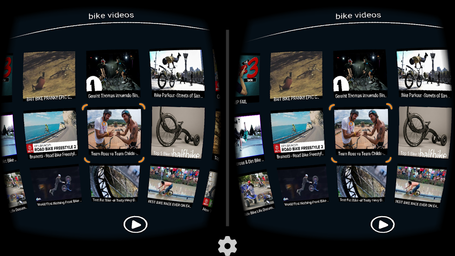
My initial thought when looking at the application was that it didn't look out of place. It conveyed a theatre-like, spanning view, which worked well. However, I started noticing usability issues when I paired the phone with my viewer. As such, I ran a heuristic evaluation to consolidate what pain points existed.
- Aesthetic and minamalist Design - Severity 1: Only the initial view has a changing background
- User Control and freedom - Severity 3: some of the feature views have no 'return' options
- Consistency and standards - Severity 2: The standard for metaphors are not conventional
- Visibility of System status - Severity 3: To navigate and know the status of which icon the user is able to tap is unintuitive and ambiguous
- Navigation proved difficult due to the lack of icon status
- The angle of selection was too narrow
- the tacticle response when no actions were made was confusing
See Initial Studies
Login/Sign Up Design
The second project I was given was to design login/signup screens. This was an important feature to implement, as we had more users on our application and as we were preparing for a crowdfunding campaign. For this specific assignment, I began working in Sketch for the first time. I took a good amount of my summer learning how to use sketch properly (and I love it), and developing different iterations of the login/signup flow. My final design stuck to the brand image and flattened the ethereal ambiance that is heavily associated with VR.
 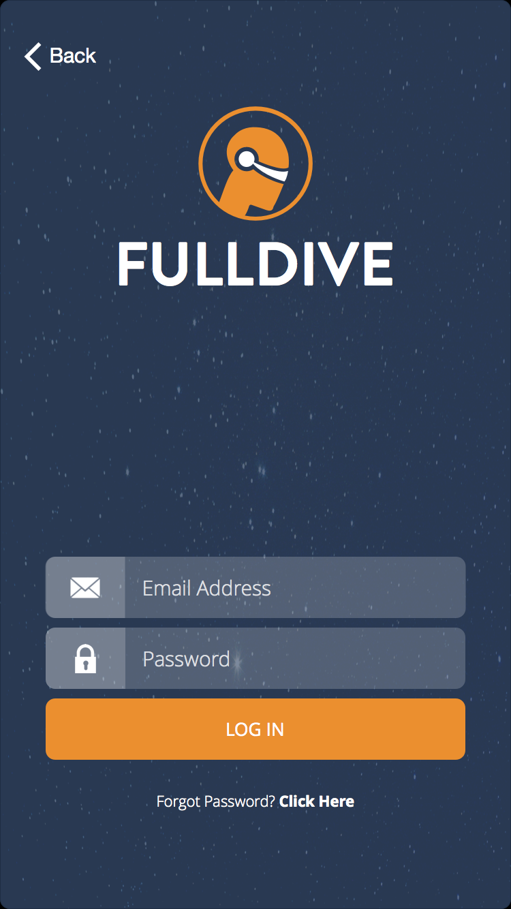
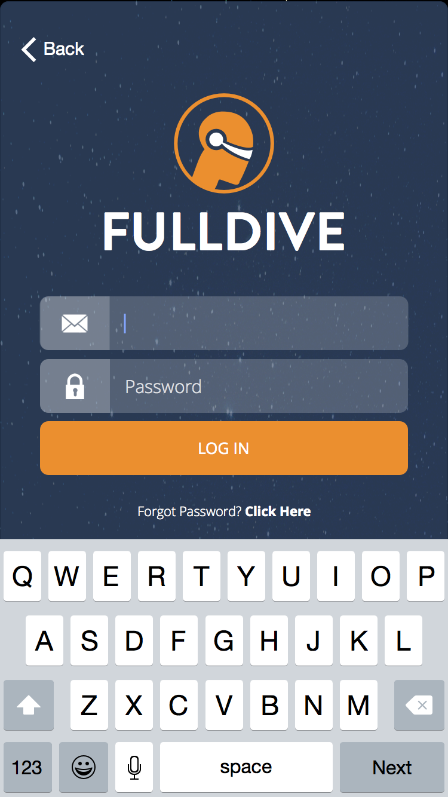
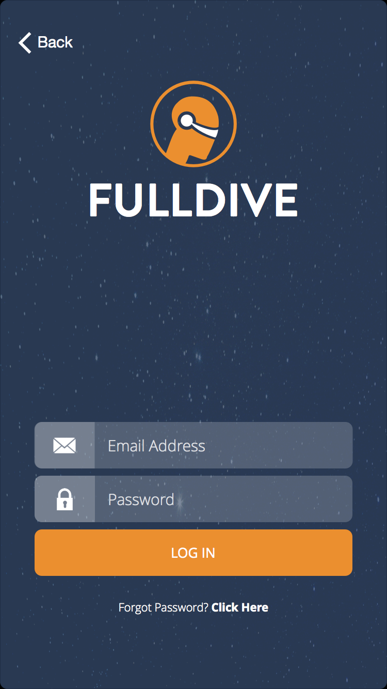
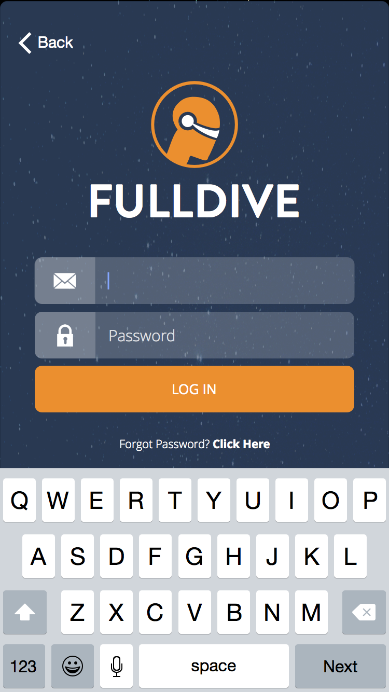
 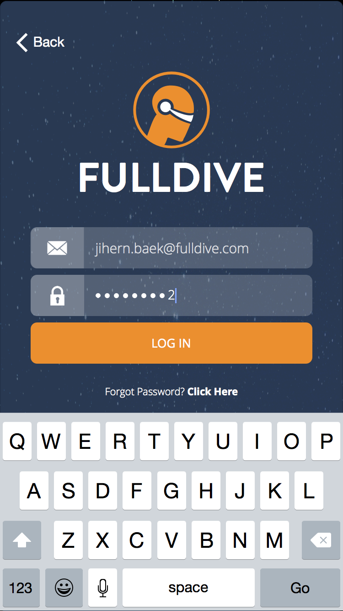
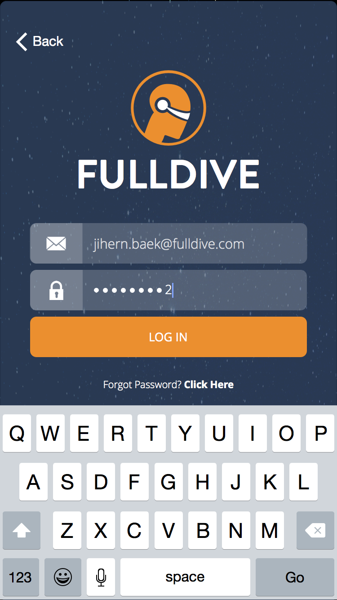
One of the major issues I had working with this particular assignment was the architecture. Though it was a simple flow, I had to scrap a number of iterations because they were difficult and untuitive to navigate through.
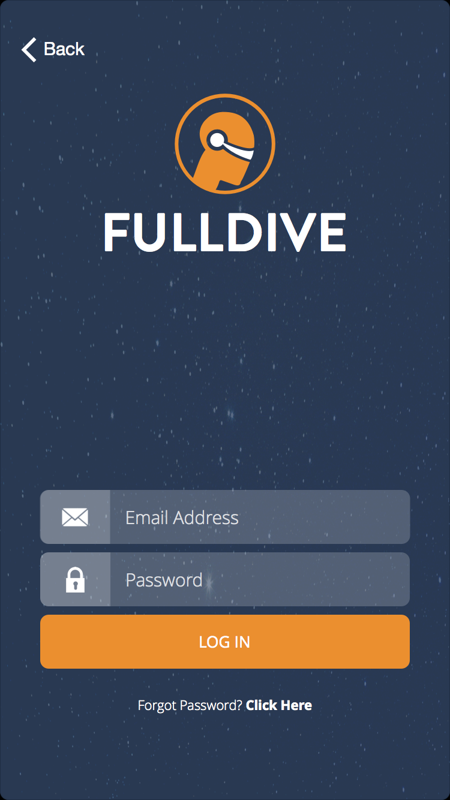
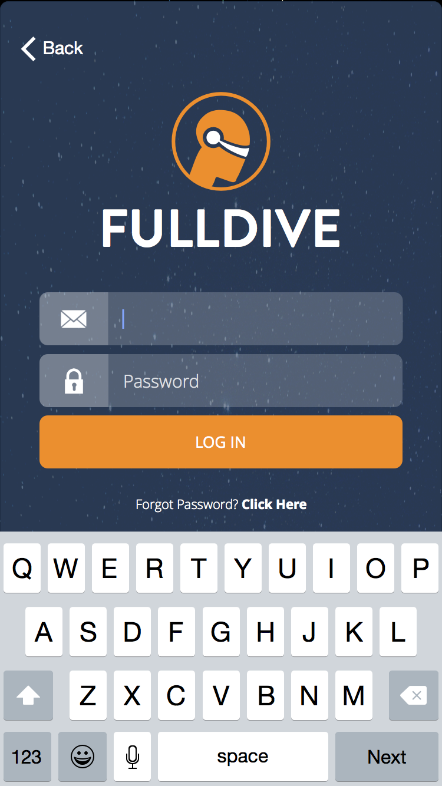
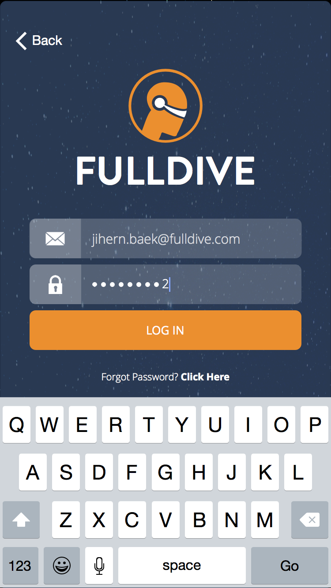
One of the major issues I had working with this particular assignment was the architecture. Though it was a simple flow, I had to scrap a number of iterations because they were difficult and untuitive to navigate through.
Homescreen Design
While I was designing the login/sign up pages, Nickki and I were simultaneously asked to revamp the existing home screen. Though the login/sign up views would necessitate another style change on the home screen, our supervisor wanted to ensure that we also focused on users who were currently utilizing our app. Accordingly, we conceptualized a design that was fully immersive. As with the login/sign up views, we decided to go with an ethereal background. And as the original screen was merely a black panel, we wanted to heigten the user's depth perception by having a background that was changing all the way up.

With that in mind, we kept the existing navigational design, where the user would shift their head left/right to course through the different icons. To that extent, the previous iteration had a terrible status update as users panneled through the different icons. As such, I set out to reconstruct the icons' overall look to match the background visual and created a mechanism that better highlighted them as users scrolled through.
See Other Projects
With that in mind, we kept the existing navigational design, where the user would shift their head left/right to course through the different icons. To that extent, the previous iteration had a terrible status update as users panneled through the different icons. As such, I set out to reconstruct the icons' overall look to match the background visual and created a mechanism that better highlighted them as users scrolled through.
360 Photo Share
One of the final projects I worked on during my internship was to conceptualize and wireframe a 360 photo sharing application. With the design team, we began discussing about how our application would work and how it would integrate into the existing app. My own personal contributions involved wireframing and mocking up the share feature, which works as a private photo/comment messenger.
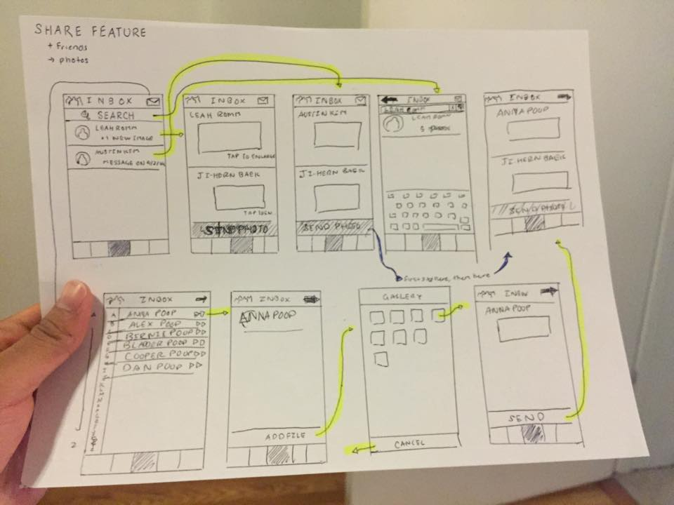
Some of the considerations I had to make include the following:
See Current App
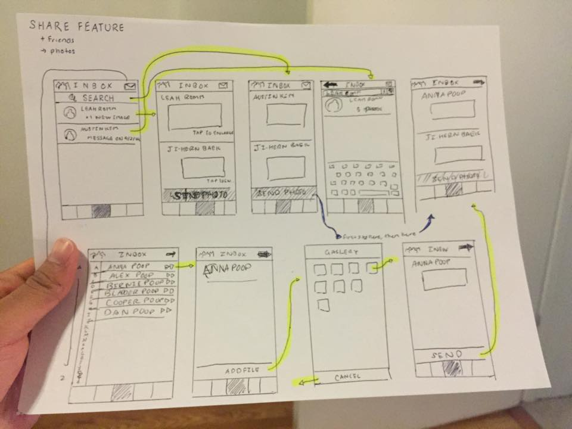
Some of the considerations I had to make include the following:
- Flow to send a message to a friend, or find a specific user
- Flow to upload a photo onto the message and send it
- Text inclusion
- Message/history display
See Current App
Takeaway
And that concluded my internship! It was certainly an interesting experience, gleaning into the world of virtual reality, which of course necessitated a different kind of design than traditional mobile design. I am incredibly greatful for the experience and happy to say that I've gone on to do a variety of different projects with my fellow co-workers!
See Other Projects